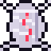

ANÁLISE COMPLETA VIA APIS PÚBLICAS
RiftInfos
Entenda seu personagem, planeje melhorias e acompanhe as lives.
Digite um nick para analisar o perfil, ou use diretamente os atalhos rápidos abaixo.
⚡ Consultar rankings
Situação atual e pontos de atenção.
Resultados históricos e planejador da próxima tentativa.
⚗️ Guia e Calculadora de Alquimia ↗Histórico de Forjas do Personagem
| Forja | Chance base | Tentativas | Sucessos | Sucesso no histórico |
|---|
Totais acumulados do personagem selecionado. A chance base oficial é 50% (Lendário), 35% (Imortal) e 25% (Arcano), podendo subir +10, +20 ou +25 p.p. com Pergaminhos de Sorte. Os bônus usados em cada tentativa individual não estão disponíveis neste histórico.
🔍 Ver matriz completa de Gelo e Fogo por peça
Contribuição das peças, conjuntos e gemas.
A fatia em FC divide 100% do ganho de equipamentos entre cada peça e gema. O indicador "Se desequipar" mostra a perda marginal imediata caso você remova a peça (pois ataque, crítico, vida e defesa multiplicam entre si).
💍 Comparativo Real dos Anéis Arcanos e Imortais (Quanto cada um dá por nível + onde conseguir)
Compare a origem, os atributos por nível e a passiva de cada anel. As curvas da Presa de Ixtharra e da Teia Escarlate são estimadas. Os exemplos mostram o bônus bruto de crítico da peça. O jogo limita a chance efetiva e converte o excesso em dano crítico.
| Anel | Como conseguir | Ganho por Nível (ATK / DEF / HP / CRÍT / VEL) | Exemplo no Nv. 300 (sem gemas) | Efeito Especial / Para que serve |
|---|---|---|---|---|
| Anel da Presa de Ixtharra (Arcano · #18) | Só cai ao vencer a Raid Covil de Vexxaris (não sai na Forja Arcana) | ~4,05 ATK · 1,35 DEF · 6,50 HP · 0,64 CRÍT · 16% VEL |
~1.215 ATK · 405 DEF · 1.950 HP · +192% CRÍT · +16% VEL | Críticos aplicam veneno por 4s (50% do ATK por segundo). Golpes contra alvos que já sangram ou estão envenenados causam 20% a mais de dano. |
| Anel da Teia Escarlate (Arcano · #19) | Só cai ao vencer a Raid Covil de Vexxaris (não sai na Forja Arcana) | ~2,65 ATK · 2,95 DEF · 16,20 HP · 0,25 CRÍT · 18% VEL |
795 ATK · 885 DEF · 4.860 HP · +75% CRÍT · +18% VEL | Após 3s em combate e depois a cada 8s, recebe um escudo pessoal de 15% da vida máxima por 4s e desacelera os inimigos visíveis por 3s. |
| Anel do Eclipse Arcano (Arcano · #14) | Chefes Zona 13+ (raríssimo) ou Forja Arcana (4 anéis Imortais, 25% base) | 3,68 ATK · 1,22 DEF · 5,93 HP · 0,57 CRÍT · 16% VEL |
1.105 ATK · 367 DEF · 1.779 HP · +170% CRÍT · +16% VEL | Eco do Eclipse: ricocheteia 60% do dano em até 2 inimigos próximos e 20% das vezes repete 100% do golpe no alvo principal (+20% DPS médio em alvo único). |
| Anel do Ceifador Cósmico (Arcano · #16) | Chefes Zona 13+ (raríssimo) ou Forja Arcana (4 anéis Imortais, 25% base) | 3,42 ATK · 1,46 DEF · 6,85 HP · 0,43 CRÍT · 18% VEL |
1.025 ATK · 438 DEF · 2.056 HP · +130% CRÍT · +18% VEL | Colheita de Almas: cada inimigo abatido por qualquer aliado dá +4% ATK (até 10 almas = +40% ATK). Na 10ª alma, causa 160% ATK em todos os inimigos e reinicia. |
| Anel do Coração do Vazio (Arcano · #15) | Chefes Zona 13+ (raríssimo) ou Forja Arcana (4 anéis Imortais, 25% base) | 2,46 ATK · 2,71 DEF · 14,87 HP · 0,28 CRÍT · 12% VEL |
737 ATK · 814 DEF · 4.462 HP · +84% CRÍT · +12% VEL | Renascer do Vazio: 1× por jornada (ou na Raid), ao morrer renasce na hora com 70% HP + escudo de 40% HP (5s) e explode 200% ATK em todos os inimigos. |
| Anel do Prisma Estelar (Arcano · #17) | Chefes Zona 13+ (raríssimo) ou Forja Arcana (4 anéis Imortais, 25% base) | 2,21 ATK · 2,21 DEF · 12,87 HP · 0,22 CRÍT · 14% VEL |
663 ATK · 663 DEF · 3.861 HP · +67% CRÍT · +14% VEL | Pulso Cristalino: a cada 10s limpa stun/gelo/medo/silêncio/sangramento/lentidão do time, dá escudo de 12% HP (4s), cura 8% HP no mais ferido e dá 3s de imunidade. |
| Anéis Imortais (#10 a #13) | Chefes Nv. 100+ ou Forja Imortal (4 anéis Lendários, 35% base) · negociáveis no Mercado |
Sede Escarlate (#10): 1,65 ATK · 2,66 HP · 14% VELCarrasco (#12): 1,83 ATK · 0,32 CRÍT · 10% VELSanguessuga (#11): 1,33 ATK · 5,75 HP · 12% VELFênix Rubra (#13): 1,01 ATK · 6,95 HP · 1,36 DEF
|
#10: 495 ATK · 798 HP #12: 549 ATK · +96% CRÍT #11: 399 ATK · 1.725 HP #13: 303 ATK · 2.085 HP |
#10: Sangramento contínuo (ignora DEF). #12: +60% dano em inimigos ≤30% HP. #11: 8% de roubo de vida sobre o dano. #13: 1× por jornada renasce com 40% HP + 20% escudo. |
Editar build, comparar melhorias e salvar cenários.
Simulador de builds
Escolha uma classe e clique em um slot para trocar equipamentos e gemas. A ficha estima o impacto na build. Você pode usar os atributos da sua peça para refinar a simulação.
Desempenho estimado em uma zona/onda.
Calculadora de Monstros, Chefes & Simulador PvE
Estimativa para chefes de zona. O Covil de Vexxaris tem regras próprias. Escala por zona e onda, bônus de vida por jogadores na live (+2,5% HP por jogador), Fúria do Boss (Rage 15s) e Tempo para Matar (TTK).
Ataques contínuos · sem ajuda de aliados · sem cura ou escudo externo · alvo com defesa correspondente à zona e onda.
🕷️ Como funciona a Raid Covil de Vexxaris (Casulo, $raid CÓDIGO, pausa da live e prêmios)
-

Como conseguir o Casulo de Vexxaris: é um item Lendário bem raro que cai de chefes de zona nas lives (e também pode cair na própria Raid). Ter Sorte ajuda no drop até os 100 pontos. Também pode ser negociado no Mercado a partir de 50 cristais. - Como abrir a Raid: só 1 pessoa precisa ter o Casulo. Ela entra no site do jogo (em uma live aberta), vai em Meu personagem, clica no Casulo e aperta "Usar: romper o Casulo". Quem usou já entra na Raid automaticamente.
- Como todo mundo entra (
$raid CÓDIGO): quando o Casulo é usado, aparece uma fogueira e um código na tela da live. Todo mundo que quiser lutar — até quem já estava na live com$jogar— precisa digitar$raid CÓDIGOno chat antes do tempo acabar. Se não juntar o mínimo de jogadores, a Raid é cancelada e o Casulo volta para quem usou. - Quem não entra continua lutando? Por que parece que "desconectou todo mundo"? Ninguém é desconectado! Enquanto a Raid rola, a fase normal da live fica pausada e a tela mostra só quem digitou
$raid CÓDIGO. Quem estava ausente (AFK) fica escondido só durante as 4 ondas da Raid; assim que ela acaba, a live volta exatamente para a mesma Zona e Onda de antes e todo mundo reaparece. - As 4 ondas e a regra de morte: O patch de 20/11 aproximou a dificuldade entre lives de potenciais diferentes. O nível da Raid é definido pelo servidor. São 4 etapas até a Rainha Ixtharra (que tem 3 fases). Lá dentro não existe renascer sozinho depois de 2 ou 3 minutos: quem morre só volta se tiver item de auto-revive (Brasa Eterna, Fênix Rubra, Coração do Vazio) ou se um Clérigo reviver (Cetro da Vida, Árvore-Mundo, Relojoeiro Real).
- Dificuldade e participantes: o nível da Raid aumenta o ataque, a vida e a defesa dos inimigos. Mais participantes aumentam a vida e podem aumentar a quantidade de aranhas, até o limite da onda. O ataque base de cada inimigo do mesmo tipo e nível continua igual.
- Rainha e resultado: durante a fuga pelo teto, a Rainha fica fora da seleção de alvos e não recebe dano. No fim, o resumo da Raid destaca dano causado, dano recebido, cura e DPS.
- Prêmios: vencer dá ouro, EXP e sorteio de itens com chance maior de Imortais, além da chance rara de Arcanos e dos 2 anéis exclusivos da Raid: Presa de Ixtharra (veneno) e Teia Escarlate (escudo e lentidão). A vitória também pode render a Aura da Rainha Ixtharra, um cosmético Arcano raríssimo.
Situação dos canais e equipamentos observados.
Radar de Lives & Scanner de Itens Usados ao Vivo
Escolha uma live online agora (ou digite o canal) para varrer os jogadores ativos em tempo real e descobrir exatamente quantos estão usando determinado item, conjunto ou anel.
Selecione uma live acima e clique em "Escanear Live".
Diferenças entre dois personagens.
Escolha um segundo jogador para comparar os stats lado a lado.